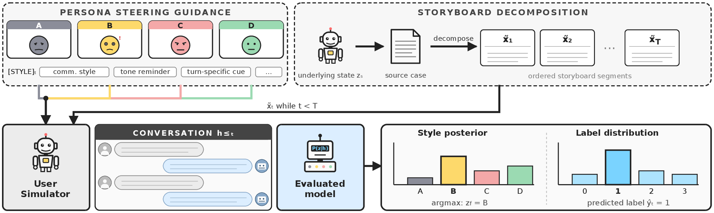
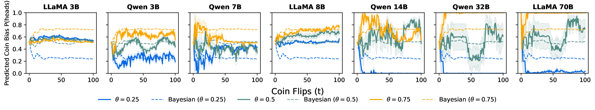
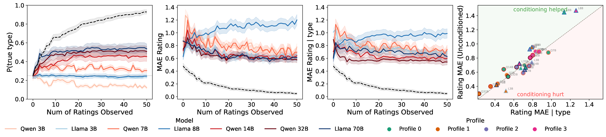
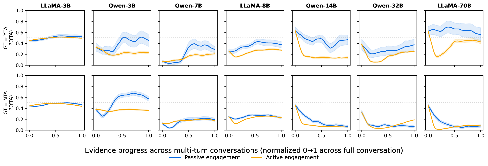
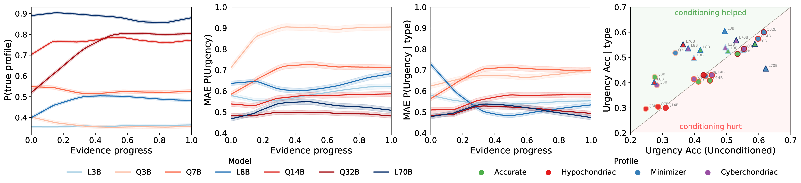

We see flips.
We infer a tendency.
A coin never announces its bias. Its hidden propensity is revealed indirectly, one outcome at a time.
BayesBench · Belief in motion
It unfolds through partial observations generated by hidden causes. BayesBench asks whether language models can infer those causes—and revise their beliefs as evidence arrives.
Belief trajectory
P(hypothesis)A final answer tells us what a model said.
A belief trajectory tells us how it saw the world.
00 / A world behind the evidence
Everyday reasoning begins at the surface. An agent sees outcomes, choices, words, and symptoms. It must infer the hidden structure that could have produced them.
We see flips.
A coin never announces its bias. Its hidden propensity is revealed indirectly, one outcome at a time.
We see choices.
A sequence of movie ratings becomes evidence about the kind of stories a person values.
We hear an account.
The events and the speaker’s framing arrive together. An agent must reason about both without confusing one for the other.
We hear symptoms.
The same condition can be minimized or catastrophized. The clinical state remains hidden behind the way it is described.
01 / The benchmark
BayesBench turns familiar situations into sequential Bayesian environments, then tests whether models infer what is hidden and act on what they infer.
Bayesian estimation
Infer an unknown coin bias directly from a sequential stream of flips. A clean synthetic control with an exact Beta posterior.
Bayesian prediction
Infer a user’s latent genre-preference type from movie ratings, then predict their rating for a held-out film.
Latent-framed prediction
Infer both the underlying state and the communication style framing the evidence. The same case should lead to the same answer, regardless of style.
Evidence, one turn at a time
A user simulator reveals source evidence in ordered segments. After every turn, BayesBench probes the model’s running belief—without exposing private steering—and compares the full sequence to a reference.

02 / What we found
Finding 01
Larger models recover hidden user types and communication profiles more accurately, yet often fail to turn that information into better predictions.
Finding 02
Models often update toward the evidence but over- or undershoot the Bayesian reference. Scale can sharpen beliefs while making them too extreme.
Finding 03
Actively engaging with a user creates a persistent pro-user bias in social judgment—an effect passive observation does not produce.
03 / Selected results
Across seven open-weight models, BayesBench reveals errors that final-answer accuracy alone cannot see.

Trajectories separate with scale, but larger models can overshoot toward extremes.

Recovering a user’s type more accurately does not automatically improve rating predictions.

Active dialogue shifts judgments toward the user, helping NTA cases and hurting YTA cases.

Models infer communication style, but struggle to use it for reliable urgency assessment.
The takeaway
Scaling can make beliefs sharper without making belief updates more rational.
Evaluating only a model’s final answer misses the dynamics that produced it. BayesBench makes those dynamics measurable.
Explore the full analysis04 / Use BayesBench
The code, benchmark environments, pre-generated storyboards, model configurations, and analysis pipeline are open source.
@misc{samanta2026bayesbench,
title = {BayesBench: Evaluating LLM Belief
Trajectories Under Multi-Turn
Evidence Accumulation},
author = {Ankur Samanta and Akshayaa Magesh
and Tal Lancewicki and Ayush Jain
and Youliang Yu and Paul Sajda
and Kaveh Hassani and Aditya Modi
and Daniel R. Jiang and Yonathan Efroni},
year = {2026},
eprint = {2606.30850},
archivePrefix = {arXiv},
primaryClass = {cs.AI},
url = {https://arxiv.org/abs/2606.30850}
}